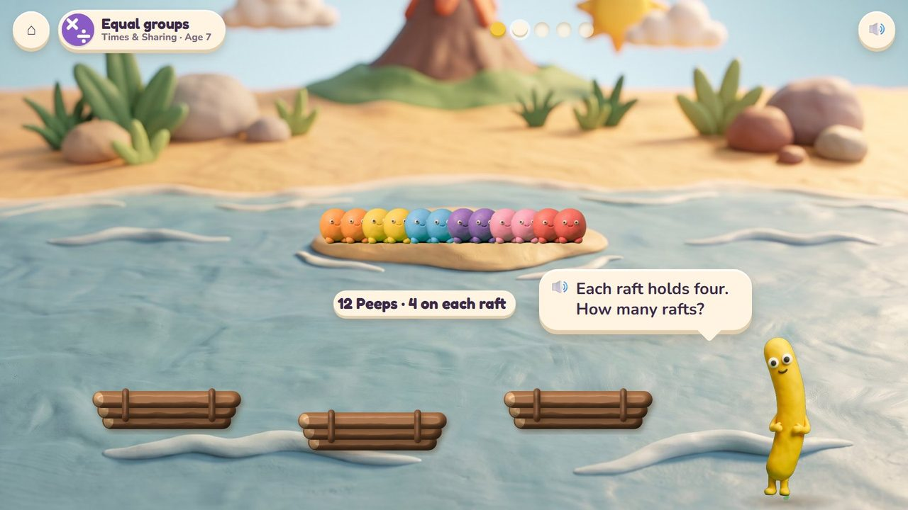
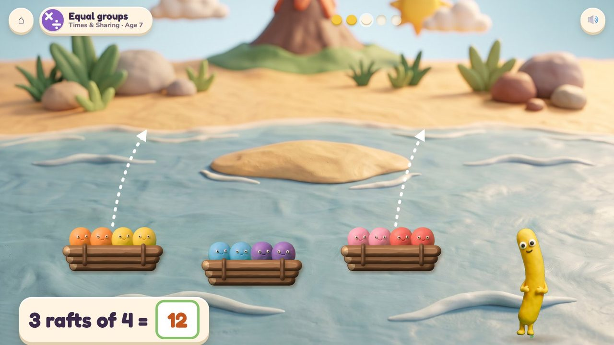
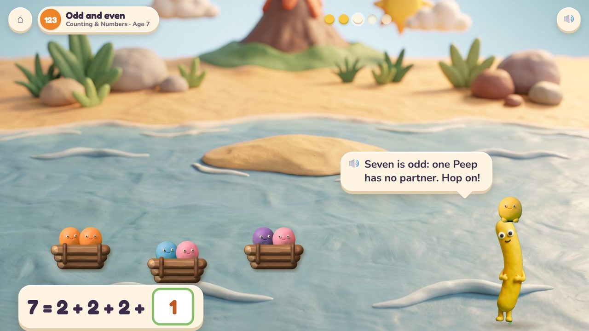
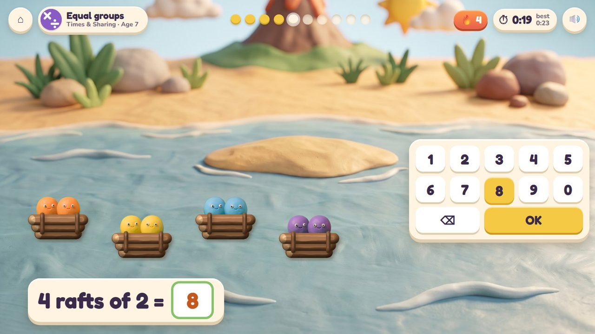
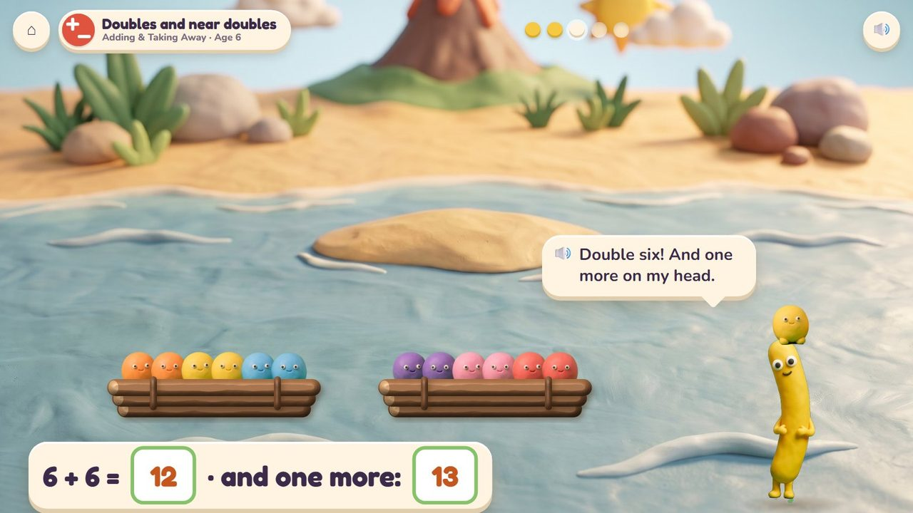

Peeps are stuck on a sandbar: fill the rafts, the same on each, and sail them home.
4 lessons (3 taught here first, the rest practised here) in 3 topics:
Counting & NumbersAdding & Taking AwayTimes & Sharing

The tide left Peeps on a sandbar. Every raft carries the same number, so the child makes equal groups, counts the rafts and sees what is left over: a Peep with no space rides home on Noodle's head. Rafts for two show odd and even; two equal rafts are a double.
Drag Peeps onto the rafts; tap a raft to push it off.
The rafts bob home to the beach; the last Peep rides on Noodle's head.
A storyboard of the game in one lesson, drawn from the app's own clay pictures.
Equal groups, age 7: twelve Peeps, four on each raft.
🔊 “Each raft holds four. How many rafts?”

Three rafts of four: 12.

Odd and even: rafts for two; seven is odd, so one rides on Noodle's head.
🔊 “Seven is odd: one Peep has no partner. Hop on!”

Four rafts of two: type 8. Timed.
The rafts are full: type how many Peeps (4 rafts of 2: 8). Ten questions at 6-7, a 60-second round from 8; your time and your best on screen; only right answers count; a miss shows the answer and comes back later. No clock under 6.
The badge at the top left says the topic, the lesson and the age.

Two rafts of six: double 6 is 12, and one more on Noodle's head is 13.
| Age 6Grade 1 | Doubles and near doubles: two equal rafts, and one more. |
| Age 7Grade 2 | Equal groups; odd and even (rafts for two); rows and columns. |
2 (odd and even), then 3, 4, 5
up to 12 at 6, up to 25 at 7
the empty places on a raft glow; Noodle counts the rafts
dragging Peeps; the number pad for the quick round
Age by age they are on the full list; here grouped by topic (the first activity named teaches a lesson, the others practise it).
2.OA.3Raft Rescue · Parcel Post1.OA.6Raft Rescue · Volcano Pop · Kart Cup2.OA.4Raft Rescue · Poke Pals2.OA.4Chocolate Snap · Raft Rescue